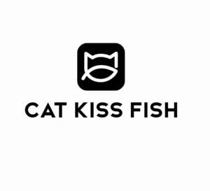

Trade Mark Journal No.2025/027 4 July 2025
UK00004222846 23 June 2025 (9,14,18,20,21,24,25,28,35,42)

- Class 9
- Computer software, recorded; Internet servers; computer operating software; computer operating programs; Computer programs for using the internet and the worldwide web; computer software for controlling and managing access server applications; computer programs, recorded; Computer operating programs, recorded; Computer software for document management; Computer software for encryption; computer programs for editing images, sound and video; Computer software for database management; network management computer software; Computer software for authorising access to databases; Computer software programs for spreadsheet management; computer programs for connecting remotely to computers or computer networks; computer utility programs for computer maintenance; Computer programs for enabling access or entrance control; computer software for organizing and viewing digital images and photographs; Computer software for wireless content delivery.
- Class 14
- Precious metals, unwrought or semi-wrought; key rings [split rings with trinket or decorative fob]; jewellery boxes; rosaries; jewellery; rings [jewellery]; bracelets [jewellery]; Wristwatches; Choker necklaces; Necklaces; Children's jewelry; Jewelry organizer rolls for travel; Chronographs for use as timepieces; Synthetic stones [jewellery]; Ruby; Sapphire; Semi-worked precious metals; Jewellery for personal adornment; Fitted covers for jewelry rings to protect against impact, abrasion, and damage to the ring’s band and stones; Metal key chains; Earrings.
- Class 18
- Fur; clothing for pets; trunks [luggage]; collars for pets; bags; leather leashes; umbrellas; rucksacks; walking sticks; pouch baby carriers; reins for guiding children; business card cases; all-purpose sports bags; duffel bags; Tool bags sold empty; shoulder straps; dog leashes; dog shoes; walking stick seats; harness fittings; bags for campers.
- Class 20
- Furniture; pet cushions; chests for toys; kennels for household pets; ladders of wood or plastics; coathooks, not of metal; mirrors [looking glasses]; bolsters; Works of art of bamboo; Works of art made of wood; dog kennels; personal compact mirrors; inflatable pillows; infant walkers; mats for infant playpens; Indoor window blinds; Newspaper display stands; dressing tables; bottle racks; shower curtain rods; works of art made of wax.
- Class 21
- Kitchen utensils; cosmetic utensils; glasses [receptacles]; Insulated mugs; dustbins for household purposes; cleaning instruments, hand-operated; brushes; Feeding vessels for pets; toothbrushes; clothes drying racks; disposable table plates; Egg separators; eye make-up applicators; toilet paper holders; compostable plates; ceramics for household purposes; smoke absorbers for household purposes; garden syringes; wine strainers; cookie [biscuit] cutters.
- Class 24
- Cloth; bed linen; non-woven textile fabrics; covers for duvets; Quilts; bath towels; furniture coverings of textile; household linen; fitted toilet lid covers of fabric; silk bed blankets; linen cloth; children's towels; furnishing and upholstery fabrics; place mats of textile; sleeping bags; table napkins of textile; synthetic fiber fabrics; blankets for household pets; velvet; crib canopies.
- Class 25
- Clothing; gloves [clothing]; children's clothing; scarves; shoes; belts [clothing]; Waistbands; hats; sleep masks; hosiery; Socks; bathing suits; Halloween costumes; neckties; Ties; clothing for gymnastics; masquerade costumes; chefs' hats; mantillas; tuxedos; men's underwear; sports bras; winter gloves.
- Class 28
- Games; machines for physical exercises; toys; knee guards [sports articles]; Chinese chess as games; ornaments for Christmas trees, except lights, candles and confectionery; balls for playing sports; fishing tackle; Fitness exercise machines; smart toys; Halloween masks; table tennis balls; inflatable beach balls; fencing equipment; candle holders for Christmas trees; golf ball retrievers; body protectors for sports use; skateboards; toy castles; badminton rackets.
- Class 35
- Import-export agency services; business management planning; advertising planning services; presentation of goods on communication media, for retail purposes; Foreign trade information and consultation; commercial administration of the licensing of the goods and services of others; systemization of information into computer databases; online advertising on a computer network; organization of trade fairs for commercial or advertising purposes; Ordering services for third parties; Online retail services relating to clothing; Online retail services relating to toys; Window display arrangement services; provision of an online marketplace for buyers and sellers of goods and services; advertising; providing business information via a website; administrative services for the relocation of businesses; business management assistance; marketing; demonstration of goods; sales promotion for others.
- Class 42
- Computer software design; computer system design; software as a service [SaaS]; platform as a service [PaaS]; development of computer platforms; user authentication services using technology for e-commerce transactions; clothing design services; computer software consultancy; Information technology consulting services; graphic arts design; quality testing; packaging design; styling [industrial design]; maintenance of computer software; Information technology [IT] consulting services; Cloud computing; conversion of data or documents from physical to electronic media; conversion of computer programs and data, other than physical conversion; Software as a service [SAAS] services; weighing of goods for others.
Jiangxi Cat Kiss Fish Technology Co., Ltd.
Representative: Yayipcom